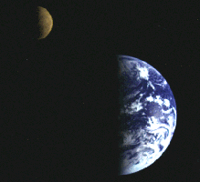
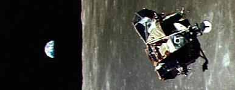

ASTR 1210 (O'Connell) Study Guide 13
Apollo 17 landing site in
Taurus-Littrow Valley
After the Sun, the Moon is the most important extraterrestrial object.
Seen in a small telescope, the Moon's surface is strange and
remarkable --- completely un-Earthlike and suggesting how
poor our intuition about the character of other planets is likely to
be. It features fantastic topography, with towering mountain peaks,
thousands of craters, and deep valleys which have never been subject
to weathering. Because its surface contains a fossilized history of
the early solar system, the Moon is a goldmine of critical
astrophysical information.
The Moon is also an accessible extraterrestrial body --- not
easily, but we were able to reach it in the 1960's. During the Apollo
program, twelve humans made six landings on the Moon and returned
invaluable rock and soil samples and other information.
In Lunar Motions and Their
Consequences we described several of the important phenomena
associated with the Moon that are easily visible without telescopes in
the sky. In this Guide, we consider the physical nature of the Moon
itself and what we have learned about its history. We also describe
another phenomenon -- the tides -- familiar to humans since
prehistoric times, whose association with the Moon was not explained
until the work of Issac Newton in the 17th century.
A. General
- Size: Diameter 3500 km = 1/4 Earth; largest satellite relative to
its primary; 5th largest overall.

"Moons" and "planets" are not intrinsically different kinds of
bodies; a "moon" simply orbits a planet, rather than the Sun.
"Planet" Mercury, at 4900 km in diameter, is smaller than two
"moons."
- Orbit and rotation: The Moon's orbit is elliptical with a
semi-major axis of 384000 km (238000 miles) but a relatively large
eccentricity of 0.05, which means that its distance from the Earth
varies by 42000 km (26000 miles) during any given orbit. Its orbital
period is 27.3 days. Its orbital properties are continually changing
slowly by virtue of the influence of gravitational interactions with
the Sun and with the non-spherical shape of the Earth (see
below).
The rotation, or "spin," period of the Moon is 27.3 days --- the same
as its orbital period. This is called synchronous
rotation. Since the Moon completes one rotation in one
orbital period, this implies that the
same face of the Moon is
always pointed toward Earth, and we call that face the "near side."
The "far side" of the Moon can never be seen from Earth and was only
photographed for the first time in 1959, when a USSR spacecraft was
sent into orbit around it.
- Telescopic exploration began in 1609 (by Galileo). Telescopes
revealed a complex topography, including mountains, craters, "maria,"
and numerous smaller-scale structures --- all easily
visible because the Moon has no perceptible atmosphere.
- Atmosphere: ~none. Lunar gravity is too small to retain
atmospheric gases, so these escape to space, except for a
tiny residual.
- Surface reflectivity: Despite its appearance in our night sky,
the Moon's surface is actually very dark. A good comparison of
the relative brightness of the Earth and Moon is shown in the picture
at the upper right, taken from a spacecraft on its way to Jupiter.
The Moon has a low albedo (reflectivity) of only ~7%
because it is is covered by a regolith, a layer of
powdery fragments from impacts, a few meters deep.
- For a large selection of maps and other data on the Moon's
surface, see the USGS Moon Information Page.
B. Main Terrain Types
The two main lunar terrain types are highlighted in the image of the
full Moon at right. Click for
more images and information.
- Highlands: rough, light colored, heavily cratered
- Maria: dark, round, smoother (variations < 150 meters).
The maria ("seas") make up the conspicuous dark pattern we see as the
"Man in the Moon." They were so named by early telescopic astronomers
because they looked like large bodies of water (but in actuality they
are completely dry). Maria are mainly confined to the near-side of
the Moon. The far-side consists almost entirely of highlands regions.
Click
here for a
photomosaic of the lunar far-side.
C. Impact Topography
The Moon's surface testifies to the fact that the surface
topography of most rocky planets is shaped largely by brutal
impacts of asteroids, planetesimals, and comets. Although they
should have realized this earlier, astronomers have only widely
accepted the importance of impacts for the last 60 years.
On the Moon, and most other solar system bodies with hard surfaces,
the impact history is preserved in the form of extensive
cratering. But impacts are responsible for most of the other
major lunar surface features as well, including the mountains and
maria.
Click here for a
comparison of the appearance of six planetary surfaces.
Here's
a quiz
(by Emily Lakdawalla) for more experienced planetary surface
aficionados that asks you to identify high-resolution (1 km) images of
18 different solar system bodies. The tremendous variation in appearance
is mainly due to the differences in surface composition.
The surface density of craters (i.e. number per square km) can be used
to crudely age-date different regions on planetary surfaces:
- The impact rate was higher at early times (4 Byr ago), when the
solar system was filled with many planetesimals not yet accreted by
planets (see discussion below).
- But even if the impact rate were constant in time,
the longer a surface has been exposed to impacts, the more
cratering it will have accumulated.
- Therefore:
- Older
surfaces have higher crater densities (number per square mile).
- Younger surfaces have lower crater densities
- Crater counts vs. size can
be calibrated to provide age estimates.
- A large regional difference in crater densities on a given object
is evidence of re-surfacing activity. We see such differences
between the highlands and maria on the Moon. The highlands have many
more craters per unit area than the maria. Hence, we infer that the
maria are significantly younger than the highlands and
represent regions that experienced more recent re-surfacing by molten
material.
Such differences are present in even more dramatic
form in cases such
as Enceladus, the sixth
largest satellite of Saturn, which has an icy, rather than rocky,
crust. Enceladus is shown in the image above right. Click for an
enlargement and note the large differences in cratering density caused
by younger ice flows covering over ancient cratered terrain.
- Earth has little surface impact cratering because plate tectonics
recycles its surface material and atmospheric weathering
erodes all structures.
Topographic Map of East Limb of Moon (Lunar Orbiter Laser Altimiter)
The "near-side" is at the left; the "far-side" on the right. Click for
the full image.
D. Topographic Features
 Click for illustrations
Click for illustrations
- Preserved: no weathering by rain, wind
- Craters: On Earth, we find craters mostly on volcanic
mountaintops. On the Moon, craters are everywhere. Lunar craters
were produced by impacts, not volcanic activity. Scales range from
millimeters to over 180 miles diameter. The circular shapes, raised
rims, and ejecta blankets are typical of impact events. In the
highlands, the cratering density is so high that all craters overlap
others.
- Maria: Large, roughly round basins; produced by major
impacts after the lunar surface had solidified, and subsequently filled by
dense, dark lava flows from the interior. Maria exhibit relatively
few craters.
- Mountains: Altitudes to 25,000 feet. All are related to
impacts, not to plate tectonics (as on Earth). Extended ranges tend to
lie at borders of maria basins and were formed during huge mare
impacts.
- Rilles: canyons produced by lava flows, not water
E. The Apollo Missions
NASA's
Apollo program was the US response to the USSR's breakthrough
achievements in launching the first artificial satellite
("Sputnik," October
4, 1957) and the first human into space
(Yuri Gagarin, 1961). In
May 1961, President Kennedy committed the US to send Americans to the
surface of the Moon within 9 years.
Despite enormous challenges, this daunting goal was actually
accomplished by NASA by 1969, the USSR having dropped out of the
Moon race in the late 1960's. The US
committed tremendous resources
toward achieving success.
The Apollo program involved a methodical series of ever
more sophisticated missions, based on
successively more capable
rockets leading to the
Saturn V, the most powerful
ever built (with a payload capacity 9 times larger than the
current-day Space-X Falcon 9 and twice that of the
Falcon Heavy).
Astronaut training, including
extra-vehicular excursions, took place
in carefully planned phases of one-, two-, and three-person low Earth
orbit missions before attempts at reaching the Moon were made.
Robotic spacecraft (e.g. the Surveyor missions) paved the way by mapping the surface
of the Moon and locating potential landing sites.
Apollo 8,
carrying the first humans to reach escape velocity from Earth and to
circumnavigate the Moon (without landing), was launched in December of
1968 (shown above right). NASA took a
major
risk with the timing of this mission because humans had never
before flown on a Saturn V rocket or employed other key elements of
the Apollo 8 technology, such as lunar orbit insertion. The crew took
the first iconic photograph of the space age,
showing Earth rise over the limb
of the Moon.
Apollo 11
achieved the first human landing on the Moon on July 20, 1969,
at a
site in the mare named the "Sea of Tranquility." Over the next 3 years,
5 additional Apollo flights explored a variety of lunar terrain (see
this map and this
mosaic of close-up
images). Astronauts carried out a number of experiments and
collected
samples of lunar soil and rocks for return to Earth. In later missions
they used "rover" vehicles to travel up to 4.7 miles from the landing site.
Apollo was a triumph of human courage, skill, and organization. The
lunar landings were of great scientific value in learning about lunar
geology and surface history and represented tremendous steps forward
in human exploration.
After 1976, there were no further spacecraft studies (human or
robotic) of the Moon until the 1990's.
A new NASA program intended to send humans back into deep space
revived US scientific investigations of the Moon, and other nations
(including Japan, India, and China) have recently begun lunar
exploration.
This site provides a complete summary of spacecraft sent to the
Moon.

Apollo 15 landing site
and rover
F. Geology of the Moon
The Apollo program returned rock samples and a wealth of
other information about the geology of the Moon.
- The overall density of the Moon is 3.3 gr/cc, which
is lower than the mean value for the Earth (implying fewer
heavy metals) but comparable to its outer layers.
- The Moon's surface contains more refractory (hard to melt)
materials than Earth and fewer volatiles
- No sedimentary rocks; only trace amounts of water in rocks
at the Apollo sites
- In the last 20 years, observations from a number of spacecraft have
suggested the presence of water on the Moon, e.g. ice lying in constantly shadowed
craters (T ~ 40K) near the poles (click
here for
details). Deposited by comets? Possibly useful for human colonies.
But results on recoverable reservoirs of water are inconclusive so
far.
- Highlands: Lower density rocks, anorthosites (Ca, Al rich);
igneous (deposited molten).
Very old ~ 4.5 Byr.
The oldest Earth rocks are younger, but Earth's surface is
tectonically recycled and such old rocks are rare.
- Maria: higher density rocks "basalts" (more Fe, Mg rich);
igneous; younger ~ 3.8 Byr
G. Interior
- The Apollo astronauts left seismic detectors behind on the Moon's
surface, and these transmitted data back to Earth for several
years. Unlike Earth, the Moon is seismically very tranquil ---
implying the complete absence of large scale tectonic motions (which
were not expected anyway on the basis of the Moon's topography).
However, small amplitude Moonquakes do occur because of tidal stresses,
and these allow its internal structure to be probed (though not
in the detail possible for Earth).
- The lunar interior is
differentiated,
but with a thick, rigid lithosphere, about ten times the relative size
of Earth's, and a small, partially-molten core. The Moon's surface
area is larger with respect to its volume than is the case for Earth,
so the lithosphere was able to cool to temperatures too low
to support tectonic cycling.
H. Origin
- Fission from Earth? No: mean chemical content differs.
- Capture? Unlikely. Captured satellites exist (e.g. of
Mars, Jupiter) but are small, asteroidal bodies.
- Collisional ejection favored. A large (perhaps Mars-size)
planetoid hits the young Earth about 4.5 Gyr ago, heating and
expelling material from the outer layers (but not the dense core)
which goes into orbit and accumulates to form the Moon (see drawing).
The hypothetical impactor is often
called Theia.
This mechanism is consistent with lunar chemistry: a composition
broadly similar to Earth's mantle but with differences that indicate great
heating of the lunar material. During the impact event, terrestrial
rocks are heated to the point that non-refractory materials evaporate,
leaving behind the lighter, refractory materials, which are then
incorporated into the Moon. For more details,
click here.
 Click here for a Quicktime animation of
the birth of the Moon and here for a brief
documentary on recent supercomputer simulations of the Moon's
formation. The painting at the right is a visualization by famous space
artist Chesley Bonestell of the Moon shortly after it had begun to
solidify as seen from the still-molten surface of the Earth.
Click here for a Quicktime animation of
the birth of the Moon and here for a brief
documentary on recent supercomputer simulations of the Moon's
formation. The painting at the right is a visualization by famous space
artist Chesley Bonestell of the Moon shortly after it had begun to
solidify as seen from the still-molten surface of the Earth.
I. History
- The Moon was initally molten after accretion.
The highlands were produced from low density magma "foam," which
floated to the top of a "magma ocean" and cooled to a solid crust.
- Intense bombardment by fragments/asteroids continued to
about 3 Byr ago, gradually declining with time. See the drawing at
the right. The highlands were subjected to a rain of impacts from
the earliest times.
- At a later time, large impacts penetrated the crust and
allowed upwelling of denser interior
magma to form the maria. By this time, the general infall
of smaller impactors had decreased, so there are fewer craters per
unit area than on the highlands.
- Based on Apollo return samples, the large maria formed this way
3.8-4.1 Byr ago. This narrow range in the dates
of big lunar impacts could indicate a special event called the
Late Heavy Bombardment, during which an unusual number of
large impactors reached the inner Solar System. The LHB may have
been caused in turn by
sudden changes in
the orbits of Neptune and Uranus, which induced a large-scale
gravitational instability, scattering planetesimal bodies throughout
the solar system.
- The LHB would have had catastrophic consequences for the surface
of Earth as well. Overall, we expect the number of impacts per unit
area on Earth to have been somewhat higher than on the Moon
(because of "focussing" by the Earth's higher gravity). For more
discussion of impacts on the Earth and their consequences for our
biosphere, see Study Guide 22.
- Water molecules released from the molten rock or delivered
later to the Moon's surface by comets or meteoroids would
diffuse off into space because of the Moon's low gravity. Open
bodies of liquid water were probably never present on the Moon,
whereas they formed relatively early in the history of the
Earth.
- The continuing bombardment from smaller objects (down to
micro-meteoroids) completely eroded the lunar surface and created the
global regolith. Although some astronomers in the 1960's
worried that the surface might have been completely reduced to fine
dust, in which spacecraft might flounder and submerge, the actual
regolith more resembled the cinder-like surface of athletic tracks
and provided a firm layer for landers and humans.
J. Tides and Their Orbital Effects
- The gravitational interaction between the Earth and Moon
does more than simply determine their mutual orbits, as described in
Study Guide 8. It has secondary effects
on the shapes of the two bodies.
- The liquid and solid surface of the Earth is distorted by
the differential effect of the gravitational forces of the Moon
and Sun across the Earth's diameter -- e.g. the fact that the Moon's
gravitational force on the side of the Earth facing the Moon is larger
than on the opposite side of the Earth. The result is a bulge
in the Earth's surface extended both toward and away from the Moon
(see the illustration). The situation was first explained by Newton
in 1687. The Earth's gravity produces complementary distortions in
the solid Moon as well.
- The "tides" are experienced as a rise and fall of the
local ocean surface as the Earth's
rotation carries a given location under the bulges. They are largest
when the Earth, Moon, and Sun are co-aligned, as shown in the figure
below:
- Over billions of years, the small changes in the gravitational
field of the Earth caused by the tidal distortions have important
consequences:
- The tidal effect tends to transfer energy from the Earth's spin to the
orbital motion of the Moon. This causes the Moon's orbit to
increase in size, with the Moon slowly moving farther from Earth.
In the Bonestell painting of the young Moon above, the Moon is
portrayed as considerably nearer Earth than it is today.
- Tides raised in the body of the Moon by the Earth's gravity act
to reduce the Moon's spin. Over time, this has slowed the Moon's
rotation to the point that it is now locked in "synchronous"
rotation, with a spin period equal to its orbital period, as
described above. Synchronous rotation
is common among the satellites of the outer planets and also
many of the exoplanets we have discovered
(Study Guide 11), which always present one
face to their host star.

Apollo 11 Lunar Module returns to the Command Module
after the first human landing on the Moon (July 1969)
Reading for this lecture:
Bennett textbook, Secs. 9.2, 9.3, 10.3
Study Guide 13
Reading for next lecture:
[Study Guide 14 and Bennett Chapter 6 are optional reading]
Study Guide 15
Bennett textbook: pp. 203-204; Secs. 9.3, 9.5.
Web Links:
Slides shown in lecture
Illustrations of Lunar Topography (O'Connell)
Lunar soil samples (O'Connell)
Phases
of the Moon (O'Connell)
Google Moon (interactive Moon viewing)
Moon
Info at Views of the Solar System
Ex Luna Scientia -- Apollo Program and Lunar Sample
Science (textbook for U. Wash. Astro 105, Toby Smith)
Resources on Impact
Cratering in the Solar System
Exploring
the Moon (robot and human missions to the Moon; LPI)
The Saturn Moon rockets (the most
powerful ever)
The (failed) USSR N1 Moon rocket
program
Lunar Exploration (history, photos, other data; NASA, NSSDC)
Apollo Mission Gallery
(3D images, panoramas, maps; by USGS)
Chariots for Apollo (description of Apollo Program spacecraft; NASA)
Apollo Over the Moon (photographs from the Apollo mission orbiters)
The Project Apollo
Archive (images, videos, info, links)
Dan Beaumont Space
Museum (images and artwork from space program)
Five
recommended books on Apollo program
Lunar Reconnaissance Orbiter Mission
The
Moon, Mars, and Beyond Project
Apollo
Moon Hoax---response from "Bad Astronomy" to the people who have
nothing better to do than imagine up improbable government
conspiracies about NASA faking the Moon landings.
Videos:
Last modified
July 2019 by rwo
Cratering rate drawing by Barbara Cohen (Univ. of Tennessee) .
Lunar formation drawing by Toby Smith (Univ. of Washington). Tide
diagram © 2006 by Encyclopedia Britannica. Text copyright ©
1998-2019 Robert W. O'Connell. All rights reserved. These notes are
intended for the private, noncommercial use of students enrolled in
Astronomy 1210 at the University of Virginia.
{kind=link}
{kind=link}
{kind=link}

 Previous Guide
Previous Guide
 Guide Index
Guide Index
 Next Guide
Next Guide
{kind=link}
{kind=link}
{kind=link}
{kind=link}
{kind=link}
{kind=link}
{kind=link}
{kind=link}